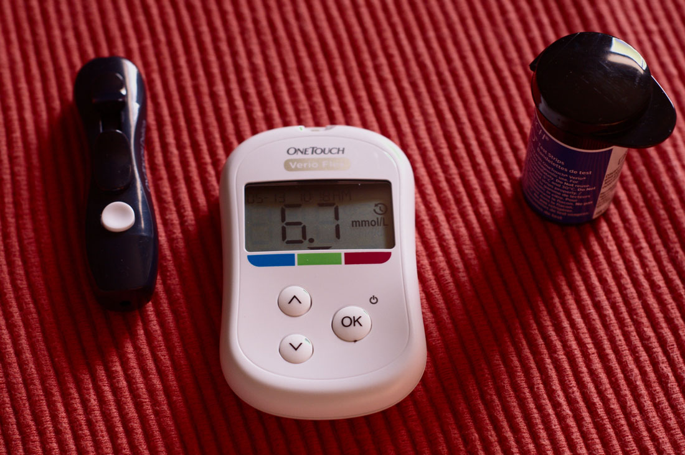
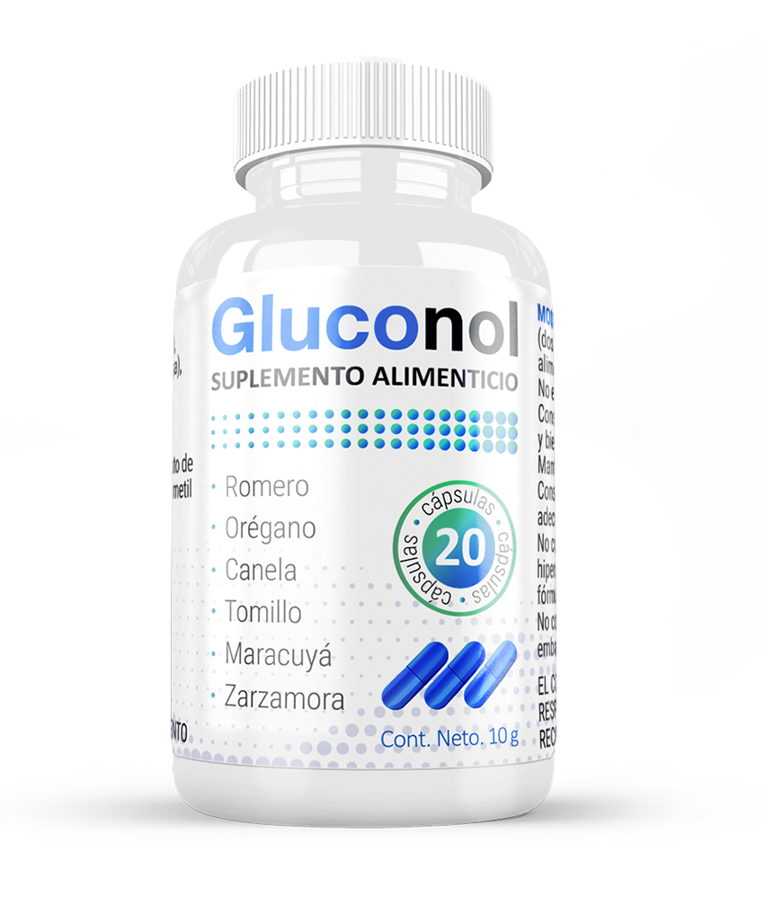

Después de que te reaniman, ya nada da miedo: la historia de vivir con un hijo diabético
El verano era caluroso y decidí enviar a mi hijo fuera de la ciudad, con mis abuelos. Volvió de allá como desganado. Miguel bebía mucho, literalmente litros. Con ese clima, no sorprendía. Pero luego comenzó a quejarse de fatiga. Entonces pensé que el niño se sentía desanimado por volver a la escuela.
A poco tiempo de volver a la escuela, comenzó a ponerse algo cansón. Normalmente era obediente y afable, literalmente empezó a llorar. No me di cuenta inmediatamente de cómo se puso pálido, me asustó mucho. Después de 5 minutos, nos montamos en un taxi hasta el hospital.
Así fue nuestra introducción a la diabetes.
Hospitalización
Nos examinaron, nos hicieron pruebas. Todo fue rápido. Apenas llegaron los resultados al médico, Miguel fue enviado a cuidados intensivos: estaba al borde del coma. Mientras tanto, me llevaron al pasillo y me diagnosticaron que el niño tenía diabetes. No recuerdo bien lo que me dijeron a continuación, algo sobre tener coraje y que necesitaba ser fuerte.
Le pusieron una venoclisis durante los siguientes 3 días. Sin comida, sin agua, sería peligroso con niveles de azúcar prohibitivos que se han mantenido durante los últimos meses. Salvaron a mi hijo literalmente en el último momento.
Las primeras noches no me alejaba de su cama. Miguel estaba al borde de algo terrible, en su delirio, no dormía, pero tampoco estaba consciente. A veces volvía en sí, incluso preguntaba: dónde estábamos, qué estaba pasando, por qué estaba todo en los cables. Estaba a su lado, hablaba con él y trataba de no llorar en frente de él. A veces, los médicos o enfermeras se nos acercaban, apenas los distinguía.
Al segundo día se quedó dormido tranquilamente, por primera vez durante ese tiempo. El médico me tranquilizó y me pidió que fuera a casa. Tenía que comer, ducharme y cambiarme para volver por la mañana. Hice caso y me fui. Y cuando entré en el departamento, me di cuenta de que no podía hacer nada. No podía ni pensar en comida.
Luego de una hora, estaba de nuevo en el hospital, junto a la cama de mi hijo. Y hasta que le dieron de alta, no me fui de allí, y viví una semana allí, en una silla.
Antes y después
Parece que Miguel lo manejó más rápido que yo. Dicen que los niños, en principio, se adaptan más rápido al cambio. Pero para mí, este golpe en mi estado general fue muy doloroso.
Llegó el momento de aprender, y no solo había llegado para el niño. Fuimos a nutricionistas, pediatras, endocrinólogos. El no saber era lo que me mataba: con el montón de información, había muchos vacíos. Seguido recibíamos la misma respuesta a nuestras preguntas: "No sé, eso ocurre de formas diferentes".
En el transcurso, resultó que los niveles de azúcar pueden verse afectados literalmente por cualquier cosa. No solo un caramelo extra, sino también un resfriado o un trabajo en la escuela.

Casi no dormí los primeros meses. Primero, la emoción no me dejaba cerrar los ojos. Me despertaba de cualquier ruido, y luego no podía dormir por mucho tiempo. A veces sentía que estaba de nuevo en esa habitación del hospital, entre las venoclisis. Segundo, al principio, el azúcar tenía que medirse 8 veces al día, incluso por la noche. Cuando los niveles subían, le poníamos insulina, cuando le bajaba, íbamos a la cocina a darle algo de comer.
Sobre la comida
Claro que comencé a controlar estrictamente su alimentación. No puedo decir que era difícil. Tener presente el coma, como se pueden imaginar, es una gran motivación para ser disciplinado.
Comenzamos la dieta juntos con Miguel. Asimilábamos los alimentos uno por uno, probábamos primero. Y constantemente revisábamos el azúcar, constantemente: creo que durante todo este tiempo obtuvimos suficientes tiras de prueba para cubrir las paredes como papel tapiz.
Problemas de adaptación
El sistema escolar en México no es muy flexible, por lo que incluso los procedimientos más simples teníamos que acordarlos. Les comentamos a todos los maestros sobre la enfermedad para que todos supieran los riesgos de tener niveles elevados de azúcar e hipoglucemia. Me peleé con quien no dejara que el niño saliera de la clase a tiempo para ir al baño o comer algo, aunque esto no sucedía con frecuencia.
Es muy difícil explicarle a la gente que no están familiarizadas con la diabetes que el niño no es así por capricho. Si su comportamiento cambia, esta es una razón para medir el azúcar, lo más probable es que el cuerpo necesite de carbohidratos.
Lo mismo con las dificultades al aprender. La falta de glucosa, por supuesto, afecta la atención y la memoria. Una vez, el niño se desmayó durante la prueba: decidió que era más importante resolver la tarea que comer, y finalmente casi se fue en ambulancia al hospital. Para que esto no volviera a suceder, decidimos ser muy escrupulosos con el apoyo médico.
Medicamentos para la hipoglucemia
Nos recetaron varios medicamentos. Todo esto se hizo de la misma manera que con la dieta, prueba y error. Nadie podía decir de antemano cómo sería tomar otro medicamento, incluso los médicos.
Estos son solo algunos de los casos que hemos encontrado debido a la medicación.
- El medicamento funcionó demasiado rápido, al final el nivel de azúcar cayó tanto en minutos que Miguel se desmayó. Tuvimos mucha suerte de que el caso estuviera en casa y ya sabía qué hacer.
- El producto bajaba la glucosa, pero solo por un periodo corto, como resultado, mi hijo sentía hambre casi todo el día. Él es un gran joven que aguantó hasta que regresó de la escuela.
- La píldoras funcionaron pero le provocaban malestar digestivo: náuseas, gases y diarrea.
En un momento llegamos a la conclusión de que las drogas sintéticas no ayudan. Su acción es completamente impredecible. Nos costó encontrar un balance entre la nutrición y el ejercicio, ya que algo necesariamente iba mal.
Decidimos probar el por consejo del endocrinólogo. Es un remedio natural a base de plantas medicinales con efecto hipoglucémico. Fue muy difícil conseguirlo, lo pedimos de Estados Unidos con un muy buen precio. Pero nos convenció la gran cantidad de comentarios positivos y la opinión con peso del médico.
Saben, pues nos ayudó. Notamos una dinámica positiva en una semana. El niño también sintió la diferencia, dijo que los cambios en el azúcar se hicieron menos notorios. El endocrinólogo confirmó los resultados: después de un mes de tomarlo, el médico redujo el número de mediciones por día de 6 a 2. Cuando terminó el tratamiento de mi hijo era otra persona: se volvió más activo, pidió que lo inscribiera en la escuela de fútbol.

Por supuesto que todavía sigo cuidadosamente su régimen y dieta, pero en general puedo decir que me quedé muy contenta con el efecto. Ahora estoy lista para recomendar a cualquier persona que haya experimentado diabetes. Si funcionó para un niño de 9 años y no le provocó ningún efecto secundario, entonces es realmente un remedio seguro y efectivo.
Para todos aquellos que quieran pedir el acá les dejo el enlace del sitio oficial del fabricante. Esta es la única forma oficial de comprar el remedio en México, así que no se dejen engañar por las falsificaciones. Además, el fabricante actualmente lanzó una promoción, ahora el remedio lo pueden comprar con 50% de descuento. Así que si quieren "intentarlo", ahora es el momento.
La promoción va hasta:
Por mi parte les deseo salud a todos.
La diabetes, claro que cambia la vida, pero puedes sacarle beneficio. Te enseña a cuidar de tu salud, y es una lección valiosa.